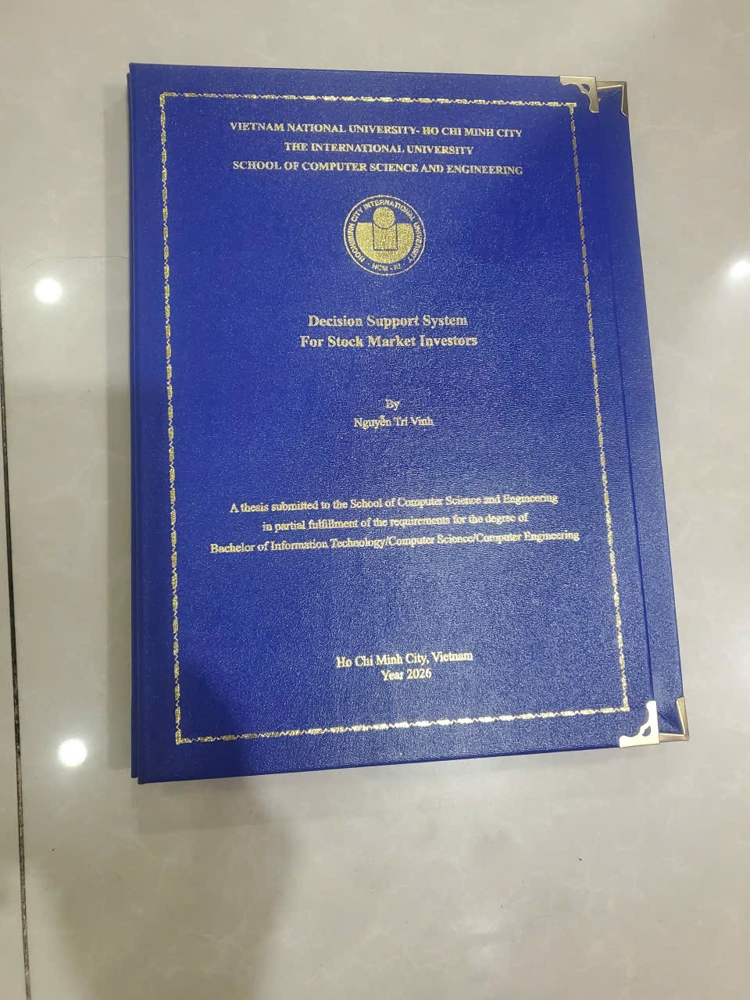
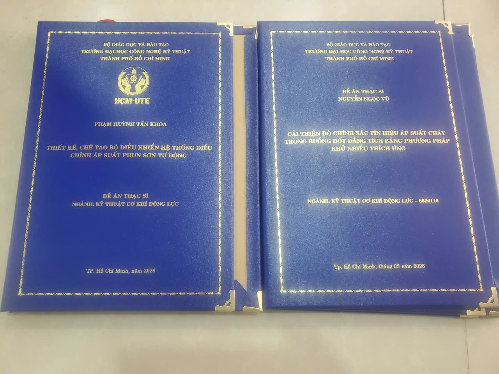

Kinh Nghiệm Phân Tích Chọn In Bìa Mạ Vàng Luận Văn Chuẩn Nhất 2025
Bảo vệ luận văn, đồ án là bước quan trọng nhất đánh dấu việc kết thúc một chặng đường dài học tập. Dù nội dung của bản báo cáo được chuẩn bị cực kỳ kỹ lưỡng, nhưng "điểm chạm đầu tiên" mà hội đồng chấm thi nhìn thấy chính là hình thức ngoại quan của cuốn tiểu luận. Vậy làm thế nào để cuốn luận văn của bạn thực sự "toát lên" vẻ học thuật, sang trọng và chuẩn quy chế của hội đồng? Bài viết sau đây sẽ cung cấp cho bạn kinh nghiệm phân tích chuyên sâu từ những thợ in ấn mạ vàng lâu năm.
Phân Tích 1: Ý Nghĩa Của Phương Pháp "Mạ Nhũ Vàng" So Với In Mực Đơn Thuần
Nhiều sinh viên thắc mắc bìa mạ vàng là gì và tại sao không nên dùng bìa in mực màu (như giấy decal cứng màu) cho chuyên ngành của mình. Sự thật là, ép nhũ vàng (foil stamping) không dùng mực in phun mà dùng nhiệt độ cao để nung chảy lá nhũ hợp kim (hợp kim nhôm + sắc tố vàng) ép chìm màng màu vào ngay lớp simili hoặc nhung của bìa cứng.
- Sự tương phản thị giác: Chữ ép kim có độ phản quang rất cao. Dưới ánh đèn của hội trường bảo vệ, dòng chữ vàng lấp lánh khẳng định tầm quan trọng và sự cao cấp mà mực vàng thông thường không bao giờ làm được.
- Tuổi thọ vô cực: Màng nhũ kim loại mỏng ép dưới nhiệt độ 120-150 độ C sẽ hòa làm một với phần bìa. Nó không bị mờ đi vì dính mồ hôi tay, không bong tróc như mực in. Cuốn luận án lưu trữ 10-20 năm trong thư viện vẫn sẽ rực sáng như mới.
Phân Tích 2: Kinh Nghiệm Chọn Chất Liệu Bìa Phù Hợp Từng Ngành Học
Khác biệt giữa một cuốn bìa mạ vàng thông thường với "hàng cao cấp" không nằm ở độ sáng của nhũ, mà nằm ở bề mặt phôi bìa cứng.

Hình ảnh thực tế: Bìa Luận văn CNTT ĐH Quốc Tế (ĐHQG-HCM) mạ vàng kim tuyến, nẹp 4 góc kim loại sắc sảo
- Ngành Kinh tế, Quản trị: Nên chọn chất liệu simili giả da bò vân trơn, màu Đỏ Tươi hoặc Xanh Đen. Sự tinh gọn và bề mặt vân nhỏ sẽ tạo cảm giác như một cuốn cẩm nang kinh doanh quyền lực.
- Ngành Kỹ thuật, Bách Khoa: Bìa xanh Navy bề mặt sần nhám là lựa chọn tối ưu. Màu xanh Navy thể hiện sự logic, vững chãi, lại chống xước rất tốt trong quá trình vận chuyển.
- Ngành Nghệ Thuật, Xã Hội: Nên thử nghiệm với bề mặt bìa nhung nhám nhẹ hoặc giả da lộn. Màu cam cháy hoặc Xanh lá đậm khi rập chữ nhũ kim sẽ làm bật tông sự sáng tạo và khác biệt.
Phân Tích 3: Thiết Kế Layout Chữ 10 Điểm Trong Mắt Hội Đồng
Cần nhấn mạnh rằng kích thước con chữ và tỷ lệ bố cục quyết định tới 50% tính thẩm mỹ tổng thể:

Hình ảnh thực tế: Bộ đôi Đề án Thạc sĩ ĐH Sư Phạm Kỹ Thuật (HCM-UTE) - Bố cục font chữ và logo chuẩn mực
- Tên Trường Học: Luôn sử dụng Font chữ chân phương có cựa (như Times New Roman, Playfair) in All-CAPS (chữ in hoa) size nhỏ và căng ngang cân đối phía trên cùng.
- Logo Trường: Cần chọn logo độ phân giải cao vector nguyên bản. Mạ vàng logo đòi hỏi máy khắc kẽm rất tinh xảo. Nếu bản in bị cháy logo, mọi giá trị của cuốn sách sẽ "đổ sông đổ bể". Logo lý tưởng ở tỷ lệ 1/5 dọc thân sách.
- Tên Đề Tài: Đây là linh hồn của quyển sách. Font chữ lớn nhất, có thể dùng in hoa hoàn toàn và có độ đậm (Bold) vừa phải. Không bao giờ sử dụng font thư pháp hay font viết tay uốn lượn cho đề tài học thuật.
Câu Hỏi Liên Quan Nhất: Có Nên Tự Làm Khuôn Mạ Vàng?
Có nhiều bạn nghĩ rập khuôn kim rất đắt và mất hơn vài ngày. Thực chất, với công nghệ số hiện đại kết hợp laser tại Bìa Mạ Vàng Anh Đức, hệ thống tự động sinh khuôn chỉ trong vòng 10 phút. Nhờ vậy, chúng tôi độc quyền gói làm bìa mạ vàng lấy liền sau 2h với giá cam kết rẻ tận xưởng.
Sắp tới ngày nộp luận văn? Đừng để phần hình thức làm tuột mất điểm số vất vả của bạn!
Nhận tư vấn thiết kế Zalo (0963 458 633) ngay